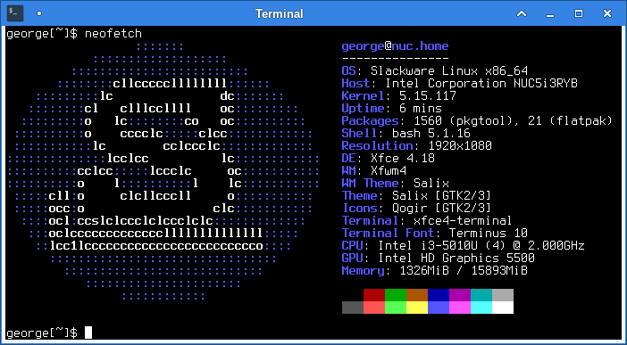
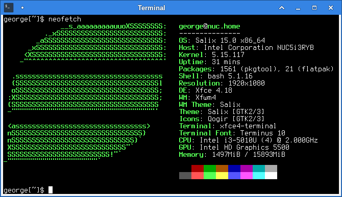

Show Off
Neofetch is a command line tool that shows some information about the running system. It is not very detailed information and it is not a very useful tool, but it is fancy.
Here’s a quote of its description from its homepage:
The overall purpose of Neofetch is to be used in screen-shots of your system. Neofetch shows the information other people want to see. There are other tools available for proper system statistic/diagnostics.
A lot of people use it in screenshots to show off their desktops online. Since Slackware 15.0, it is also a part of the default installation of Slackware, so it is also included in the Salix repositories (but not installed by default).
So, it came to my attention that running neofetch on a Salix system, would
produce output that identified the system as Slackware. Which, of course, is
accurate, as Salix is derived from and is fully compatible with Slackware.
Here is a screenshot of neofetch in action, identifying Salix as Slackware
and showing the Slackware logo in ascii art with some level of geekiness:

The information that neofetch reads to identify the system in this case, is the
/etc/os-release file, which
is included in the aaa_base package. The aaa_base package comes from
Slackware and is the very first package that is installed when you are
installing Salix (or Slackware for that matter). The /etc/os-release file
contains information about the running operating system. In Slackware64 15.0
this file includes these lines:
NAME=Slackware
VERSION="15.0"
ID=slackware
VERSION_ID=15.0
PRETTY_NAME="Slackware 15.0 x86_64"
ANSI_COLOR="0;34"
CPE_NAME="cpe:/o:slackware:slackware_linux:15.0"
HOME_URL="http://slackware.com/"
SUPPORT_URL="http://www.linuxquestions.org/questions/slackware-14/"
BUG_REPORT_URL="http://www.linuxquestions.org/questions/slackware-14/"
VERSION_CODENAME=stable
So, I thought that maybe it wouldn’t be a bad idea to identify Salix as what it is and show a Salix logo in neofetch. Someone had even asked just that in the neofetch issue tracker.
Two things would have to be done to fully accomplish this:
- Include a Salix ascii art logo in neofetch.
- Make the system actually identify as Salix when queried.
The first part was straight forward enough. I opened up a Salix logo in Gimp, resized it to an appropriate size and exported it as ASCII art. I was very surprised to find such an option in Gimp, but I don’t complain! After some trial and error and back and forth and some manual adjustments I ended up with a logo that I think looks good. So, I edited the neofetch code (it’s only just Bash) and added the logo. I then proceeded to open a pull request with the neofetch github project. It has been a couple of days and has not been yet accepted, but it will, eventually, when someone gets to it. Probably.
And then came the second part. That was not going to be that easy.
The proper way to do it, would be to update the /etc/os-release file. But
this is inside the aaa_base package, which is excluded from updates in
slapt-get, as it should never be updated anyway. So, providing an updated
package for aaa_base is not an option. At least not for Salix 15.0. In
future versions it would be easier to provide our own version of the
aaa_base package, with the updated information.
After digging into the neofetch script, I found out that it reads the contents
of files /etc/lsb-release, /usr/lib/os-release and /etc/os-release, in
this order, to determine which the current distribution is. The
/usr/lib/os-release file should have the exact same format as the
/etc/os-release file, so it should be possible to provide such a file with
some package update, other than aaa_base. That way, neofetch would identify
Salix correctly, even though the /etc/os-release file would still be saying
it’s Slackware. However, when reading the
os-release manpage, it
is clear that neofetch’s behaviour is wrong. From the manpage:
The file /etc/os-release takes precedence over /usr/lib/os-release. Applications should check for the former, and exclusively use its data if it exists, and only fall back toi /usr/lib/os-release if it is missing.
Neofetch is doing the exact opposite of this, it gives precedence to
/usr/lib/os-release. I don’t know why it is the way it is in neofetch, it’s
probably that nobody noticed it’s the wrong way around and I’ll probably
make another pull request to fix this in neofetch. In any case, I wouldn’t
want to make any changes that would be undone by fixing something else at
some point.
OK, so what about the /etc/lsb-release file? This is not included by default
in Slackware. There is an lsb-release package in our extra repository, built
from sources in slackbuilds.org. Installing this provides the
/etc/lsb-release file, along with an lsb_release script that reads this
file and shows the information to the user. So, we could provide an updated
lsb-release package in our main repositories, overriding the one in extra.
This one could provide an /etc/lsb-release identifying Salix and neofetch
would work for us too.
The original lsb_release script was a Python script. Examining the
lsb_release script that comes with the lsb-release package in extra and
looking at the
respective source repository
at Sourceforge, I found out it is an alternative implementation written as a
shell script that provides the same functionality, while removing the Python
dependency. Although Python is installed by default in Salix, it is not a bad
idea to not have a dependency on Python, it makes it possible to have it
working on an extremely minimal system that may not have Python installed. It
was also obvious that this script hasn’t been updated since 2001! That might
actually be OK, if there is nothing to update, it’s just a shell script after
all. If it works, it works, no matter how old it is. But it got me thinking.
So, I looked around for updated implementations and I found a few. For example,
I found out that Arch uses an
updated version of the same
script. It includes support for a newer spec, along with a few minor
updates and bumps the version number from 1.4 to 2.0. And I also found that
Debian now uses a completely
different and minimal implementation
and by extension I am assuming that all Debian derivatives use this one as
well, I haven’t checked though. I really liked this implementation a lot more
as it is much simpler than the one in our extra repo. It’s only about 100 lines of
script, instead of the approx. 400 lines of the other one. It is much more
readable and provides the exact same functionality. Suffice to say, I liked it
better.
There is one problem though. This simpler implementation reads information
from the /etc/os-release file, instead of the /etc/lsb-release file! So,
we’re back at our original problem of updating the /etc/os-release file.
At this point, I started doubting that I should do anything about this at all.
On one hand, we could provide an updated /usr/lib/os-release with some
package update (but which package? I couldn’t think of one that would fit the
purpose) or an /etc/lsb-release file, along with an updated lsb-release
package. These options rubbed me the wrong way. The Linux world seems to
have settled that the distribution’s information should be provided with
the /etc/os-release file, after a long time of each distribution providing
their own means of identification, like /etc/slackware-version for
Slackware, /etc/debian_version or /etc/debian_release for Debian,
/etc/fedora_release for Fedora etc. If anything, we should try to follow
existing standards.
And then I remembered that we already use at least one non-standard file to
identify the Salix release. This one is /usr/share/salixtools/salix-version
and it is used at least by our reposetup script and its GTK3 counterpart,
but also by the eliloconfig script in the LILO package. This is something
that, if we follow the standard way of doing things, should be done through
the /etc/os-release file and the lsb_release script.
So, the ideal thing to do, would be for our system administration tools
to query lsb_release and that one should provide the correct identification
information. This also provided a solution to our problem of how would we
update stuff on already running systems, so that they could now identify
properly as Salix. We could use the minimal lsb_release implementation
that I liked and package it up in a new lsb-release package in our main
repositories, so it would override the one in extra. This updated package
could include an /etc/os-release file that would identify the system as
Salix and it could be packaged in a way so that even if the lsb-release
package was removed, the updated /etc/os-release file would stay in place.
The only way that the /etc/os-release package could be reverted by the
package manager to its original contents would be for the aaa_base package
to be updated and removed from the excluded list in slapt-get. But that is
never going to happen. So, if the new lsb-release package was installed,
the correct information would be there.
I also updated our salixtools and salixtools-gtk packages to run the
lsb_release script to get the version information they require and made the
new lsb-release a dependency of the updated salixtools package. This way,
if someone updated the salixtools package with slapt-get, they would also get
the lsb-release package too. Since salixtools-gtk depends on salixtools
anyway, by extension, the same thing would be accomplished by upgrading that
one too. For now, the /usr/share/salixtools/salix-version file stays in
place, in case there are other scripts that use it that I had forgotten about
or if someone has some personal scripts that use it. It will be removed some
time in the future though, probably with the next release that comes after
15.0.
And that’s what yesterday’s updates for the salixtools and salixtools-gtk packages were about. I also took the opportunity to update some translations at the same time.
One last thing to do, was to provide an updated neofetch package, which would include my Salix logo patch that I had submitted as a pull request. Since this package would be in our main repositories, it would take precedence over the original one that is included in the Slackware repositories.
And that’s how, finally, if you have an updated system and install neofetch, you now get this instead:
